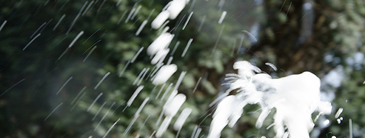

Sabrering, av franskans sabre vilket betyder sabel, är en högtidlig och spektakulär metod att öppna champagneflaskor. Vid sabrering slås flaskans hals av med en sabel och eftersom den är trycksatt faller inte eventuellt glassplitter
ner i vätskan.
Det går att sabrera flaskor innehållande mousserande vin, men det är viktigt att vinet är gjort enligt champagnemetoden och trycket minst 6 bar. Det finns speciella sablar som används vid sabrering, men det går bra att använda en tung kökskniv. Det är baksidan av sablen/kniven och inte
eggen som används.
För att ha störst chans att lyckas utnyttjar man flaskans svagaste del, en upphöjd fals som löper vertikalt längs
hela flaskan. Där falsen möter "huvudet" är flaskan
som svagast.
Ju kallare vinet är desto mindre sprutar ut och går "förlorat". Det är viktigt att vira en handduk som skydd för handen eftersom det finns risk att flaskan spricker. Avlägsna allt folie, men behåll metallgrimman på. Då riskerar man inte att korken flyger iväg av sig själv.
